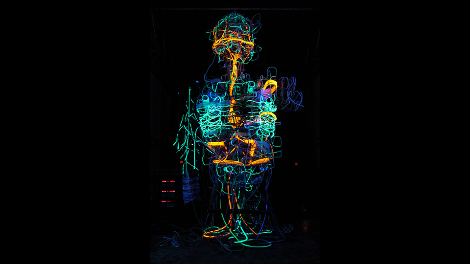
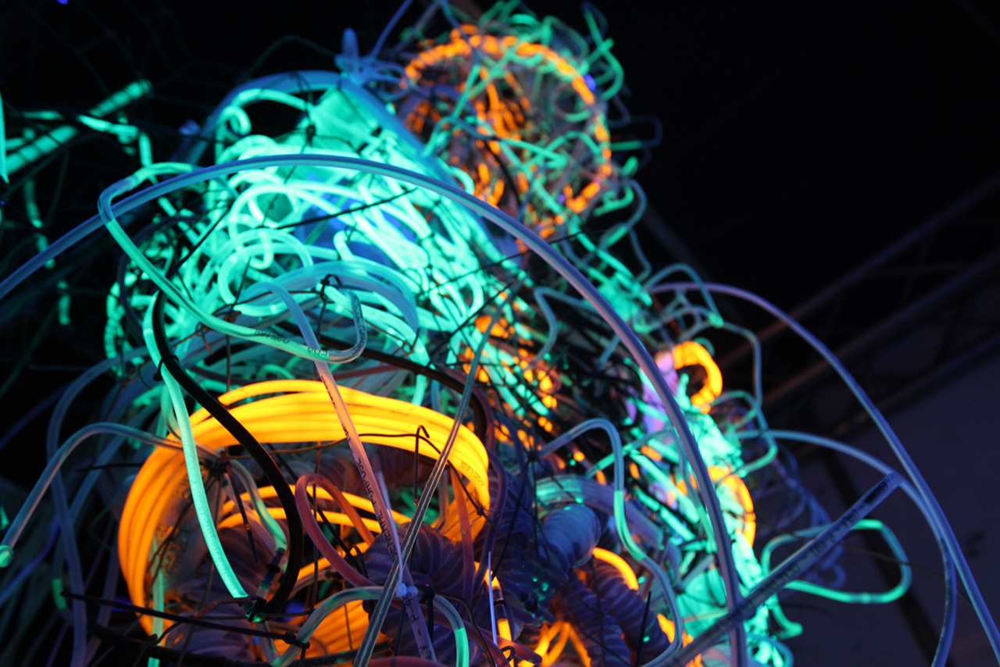
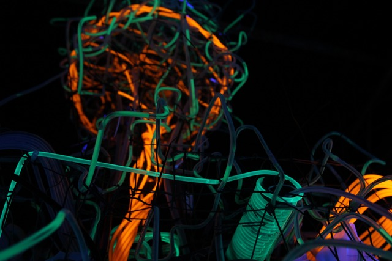
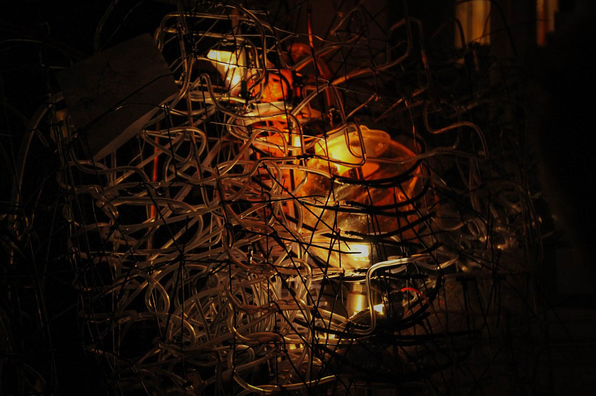
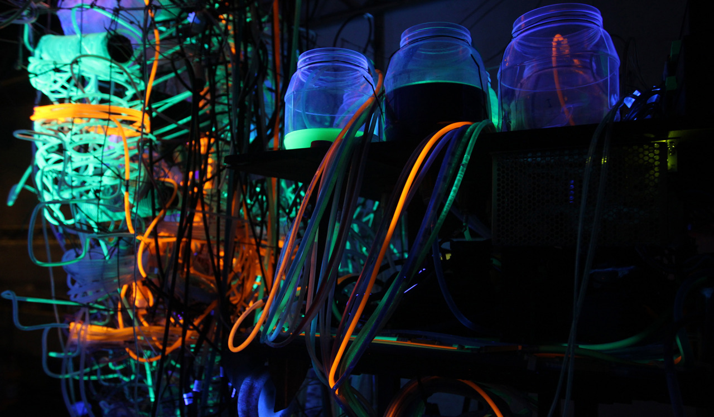
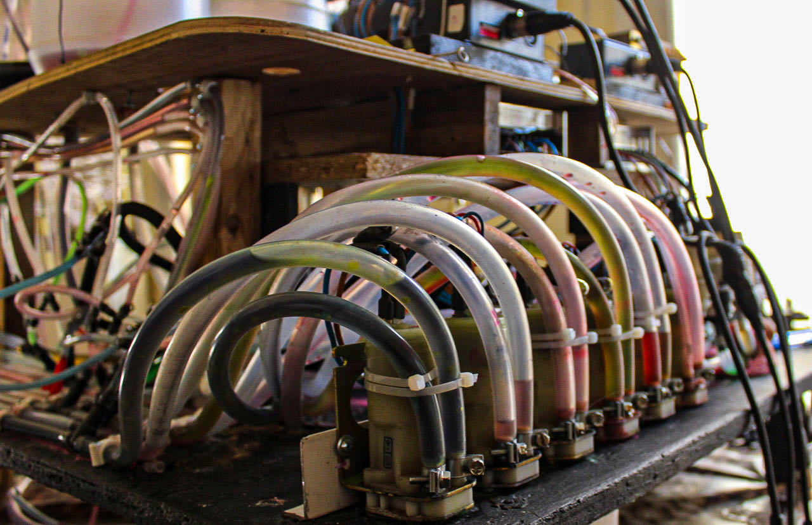
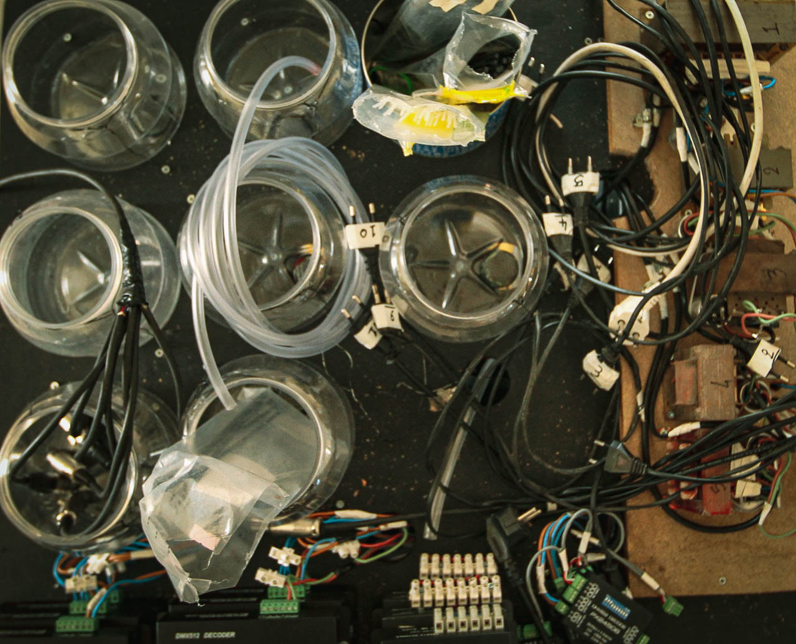
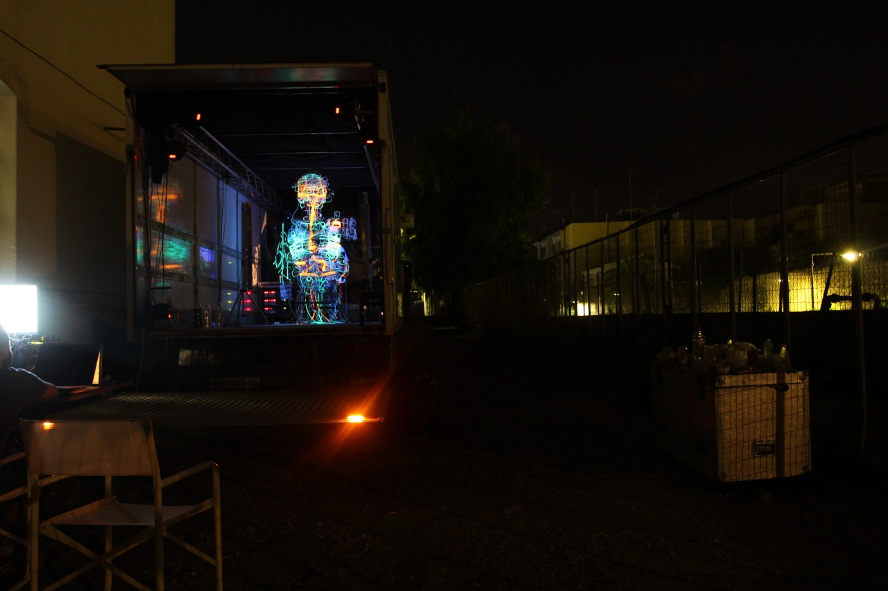

Kalliplokamos
Generative sculpture made from steel, chicken wire, PVC tubing, UV lights, fluid circulation machinery, and a category C truck.
Meet Kalliplokamos — a 3-metre-tall sculpture woven from 2km of PVC tubing. Glowing UV colors run through its body, driven by a system of water pumps and compressed air.

Glowing fluids circulate through a network of tube-woven, inner-body geometries, abstractly describing hormonal travel through the organism as emotions are experienced. Through the phenomenal chaos, refined patterns emerge, and musically controlled machine sounds dominate the surrounding space.




Glass jars of UV-reactive fluid feed the tubing network, circulated by water pumps and compressed air to keep the colors moving through the body.

Behind the scenes, a bank of pumps and DMX-controlled valves keeps the fluid moving through the tubing, timed to the piece's musically controlled machine sounds.


Kalliplokamos lives and travels in the cargo space of a category C truck, unloaded and lit up wherever it goes.
